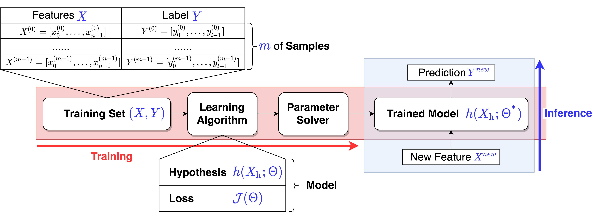
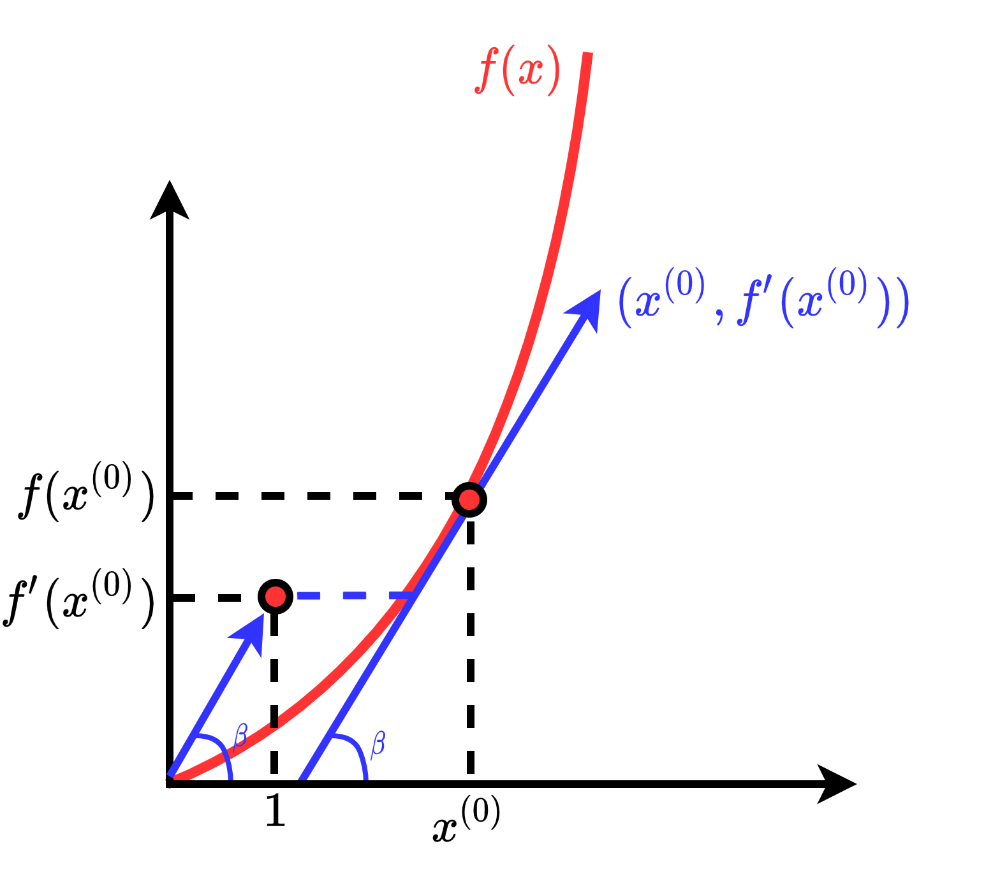
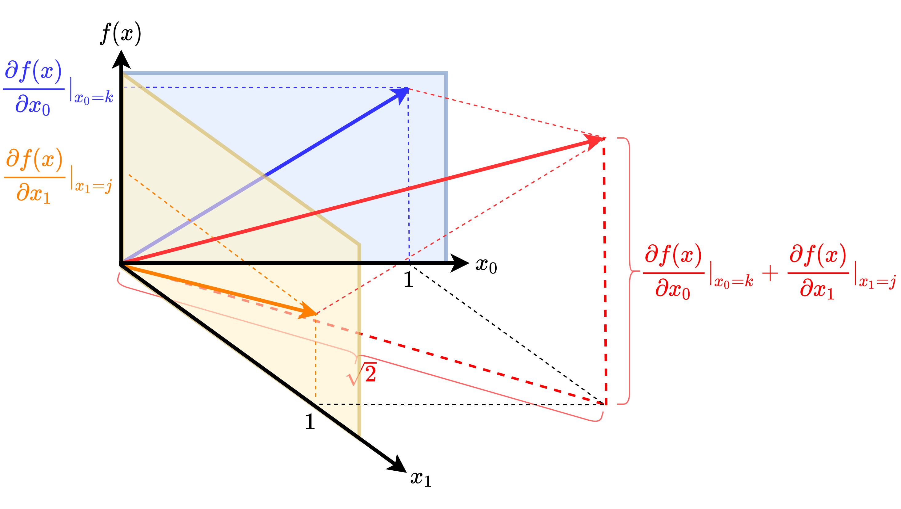
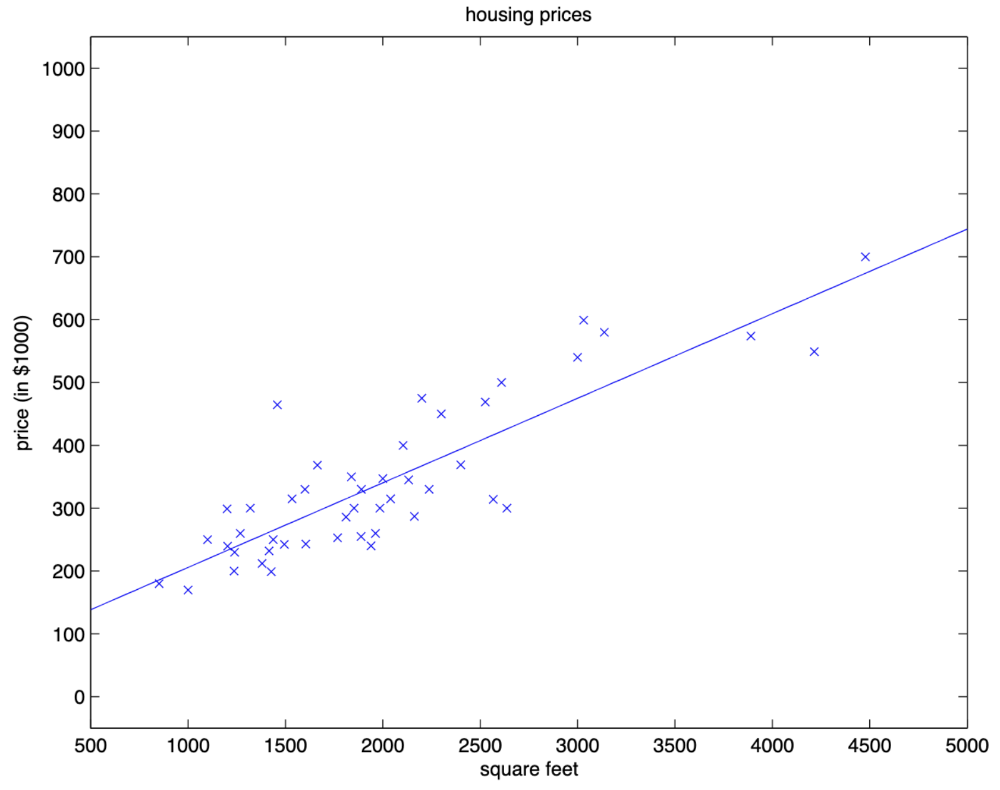
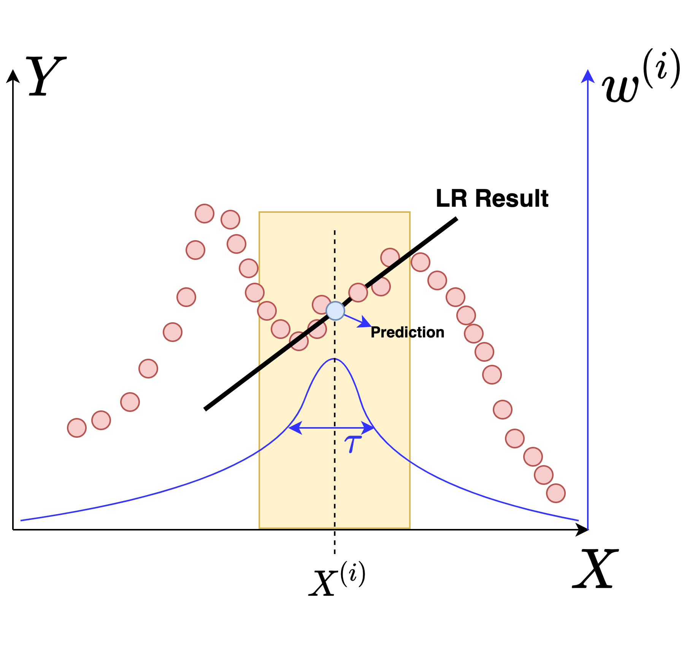

⚠ 转载请注明出处：作者：ZobinHuang，更新日期：Sept.15 2022
目录
有特定需要的内容直接跳转到相关章节查看即可。
正在加载目录...
ML 范式: Supervised Learning
本文要重点介绍的 线性回归 (Linear Regression) 是属于 Supervised Learning 的一种学习算法，而学习算法只是整个 Machine Learning 流程中的一环。本节首先我们回顾一下 Supervised Learning 的基本流程:

如 supervised_learning 所示，首先我们来看 训练 (Training) 过程。我们首先给出一个 训练集 (Training Set) ，里面包含了 $m$ 条 样本 (Samples) $(X,Y)=[(X^{(0)},Y^{(0)}),...,(X^{(m-1)},Y^{(m-1)})]$，每一条 Sample $(X^{(i)},Y^{(i)})$ 中都有对应的 特征 (Features) $X^{(i)}$ 以及其对应的 标签 (Label) $Y^{(i)}$。注意到 $X^{(i)}$ 是 $n$ 维的，即
$X^{(i)}=[x_{0}^{(i)},x_{1}^{(i)},...,x_{n-1}^{(i)}]$
$y^{(i)}$ 是 $l$ 维的，即
$Y^{(i)}=[y_{0}^{(i)},y_{1}^{(i)},...,y_{l-1}^{(i)}]$
这些 Samples 将作为 学习算法 (Learning Algorithm) 的输入。后者首先定义了一个带参数 $\Theta$ 的 假设 (Hypothesis) $h(X_{\text{h}};\Theta)$，Hypothesis 的本质是一个计算过程，用于根据输入的特征 $X_{\text{h}}$ 输出预测值。由于 Hypothesis 携带参数，并且做 Supervised Learning 的 Training 的目标就是基于 Training Set 学习这些参数，因此我们还需要为 Hypothesis 定义一个 损失函数 (Loss Function) ，Loss Function 的目标是将 Hypothesis 输出的预测值和 Training Set 中给出的 Label 进行比较，并且量化地给出两者的差异，以用于后续参数优化，我们把这种差异称为 损失值 (Loss) 。Loss Function 和 Hypothesis 就组成了我们常说的机器学习 模型 (Model) 。
有了 Model 和 Training Set，Supervised Learning 的 Training 过程就是把 Training Set 中的 Samples 输入到 Model 中，首先计算出 Loss，接着我们就需要一个 参数求解器 (Parameter Solver) ，后者基于最优化算法的思想，基于 Loss 计算出 Hypothesis 中各个参数的更新值。在完成参数的更新后，我们就得到了一个 训练好的模型 (Trained Model) ，此时 Traning 流程就结束了。
在 推理 (Inference) 流程中，Trained Model 就可以用于对新的输入特征 $X^{(n ew)}$ 输出一个预测值 $Y^{(n ew)}$。
学习算法: 线性回归 (Linear Regression)
在完成对 Supervised Learning 流程的理解后，本节我们将进入我们第一个 Learining Algorithm —— 线性回归 (Linear Regression) 的学习。
Hypothesis 的形式
基于上述流程，我们首先关心的问题是 Linear Regression 的 Hypothesis $h(X_{\text{h}};\Theta)$ 的形式。Linear Regression 的 Hypothesis 定义如下:
$\hat{Y}^{(i)} = h(X^{(i)};\Theta) = \theta_{b} + \sum_{j=0}^{n-1}\theta_jx_j^{(i)}$
其中 $n$ 表示了输入向量 $X$ 的维度，对应的也是参数 $\Theta$ 的维度; $\theta_{b}$ 是一个偏置值，我们可以给 $\Theta$ 和 $X$ 多加一个维度来合并这个偏置值，这样一来 $x_n$ 就恒等为 $1$。化简如下：
$\hat{Y}^{(i)} = h(X^{(i)};\Theta) = \sum_{j=0}^{n}\theta_jx_j^{(i)}$
再次强调，$X$, $Y$ 和 $\Theta$ 都是向量，可以表示如下:
`\Theta = ((\theta_0),(\theta_1),(...),(\theta_{n}))`，`X = ((x_0),(x_1),(...),(x_{n}))`，`Y = ((y_0),(y_1),(...),(y_{l-1}))`
Loss Function 的形式
在有了 $h(X_{\text{h}};\Theta)$ 的形式之后，我们接下来关心的问题就是 Loss Function 该如何定义。
直觉告诉我们，$h(X_{\text{h}};\Theta)$ 所应用的参数 $\Theta$，应该使得 $\forall X^{(i)}\in X$，$h(X^{(i)};\Theta) \approx Y^{(i)}$，也即 $h(X_{\text{h}};\Theta)$ 输出的结果应该尽可能得和 Training Set 中各个 Sample 的 Label 接近。
基于这个直觉，我们定义一个简单的 Loss Function:
$\mathcal{J}(\Theta) = \sum_{i=0}^{m-1}(h(X^{(i)};\Theta)-Y^{(i)})^2$
为了后面计算方便，我们在前面加上系数:
$\mathcal{J}(\Theta) = \frac{1}{2}\sum_{i=0}^{m-1}(h(X^{(i)};\Theta)-Y^{(i)})^2$
有了 Loss Function 之后，接下来 Parameter Solver 的工作就是：找到使得 $\mathcal{J}(\Theta)$ 最小的 $\Theta$ 值，也即:
$\Theta^{\text{*}}=$ argmin$[\mathcal{J}(\Theta)]$
稍后我们在 [gd] 和 [ne] 中将 Parameter Solver 是如何实现上面这个目标的。
从最大似然的角度来解释 Loss Function 的定义
在上文中，我们定义了 equ_loss_define 的基于平方差的 Loss Function，在本节中我们从概率的角度将说明为什么将 Lost Function 定义为平方差是合理的，并且我们将从最大似然的角度出发，分析我们上文定义 Linear Regression 这个 Loss Function 的过程的本质 (内在思路)。
首先，我们先把 Hypothesis 的输入特征 $X^{(i)}_{\text{h}}$ 和这份输入特征对应的标签 $Y^{(i)}_{\text{h}}$ 视为随机变量，这点很重要，有了随机变量的假设，我们就可以对这两者进行概率分布的假设。为什么要进行概率分布的假设呢？因为我们本节将从最大似然的角度来解释 Loss Function 的定义，Loss Function 基于 Hypothesis 而定义，因此我们需要首先对 Hypothesis 的概率特性进行表示。
现在让我们开始，首先我们可以认为 $X^{(i)}_{\text{h}}$ 和 $Y^{(i)}_{\text{h}}$ 存在如下关系：
$Y^{(i)}_{\text{h}}=\Theta^TX^{(i)}_{\text{h}}+\epsilon^{(i)}$
其中 $\epsilon^{(i)}$ 是误差项，是一个随机变量，描述的是对于一份输入特征 $X^{(i)}_{\text{h}}$ 的 Hypothesis 输出结果 $\Theta^TX^{(i)}_{\text{h}}$ 与对应的标签 $Y^{(i)}_{\text{h}}$ 之间的误差，其本质是无法被模型描述的特征与标签之间的关系 (Unmodel Effects)。我们进一步假设 $\epsilon^{(i)}$ 是 Independently and Identically Distributed (i.e. IID, 独立同分布) 的，并且我们假设并且服从的是均值为 $0$，方差为 $\sigma^2$ 的正态分布，$\epsilon^{(i)} \sim N(0,\sigma^2)$，也即:
$p(\epsilon^{(i)})=\frac{1}{\sqrt{2\pi}\sigma} \cdot \exp(-\frac{(\epsilon^{(i)})^2}{2\sigma^2})$
这样一来，我们可以得到，在基于给定参数 $\Theta$ 和已知输入特征 $X^{(i)}_{\text{h}}$ 的条件下，输入特征 $X^{(i)}_{\text{h}}$ 对应的标签 $Y^{(i)}$ 是一个服从正态分布的随机变量，其以 $\sigma^2$ 为方差在 $\Theta^TX^{(i)}_{\text{h}}$ 附近波动，也即满足如下关系:
$p(Y_{\text{h}}^{(i)}|X_{\text{h}}^{(i)};\Theta) = \frac{1}{\sqrt{2\pi}\sigma} \cdot \exp(-\frac{(Y_{\text{h}}^{(i)}-\Theta^TX_{\text{h}}^{(i)})^2}{2\sigma^2})$
写作概率表达式，即:
$(Y_{\text{h}}^{(i)}|X_{\text{h}}^{(i)};\Theta) \sim N(\Theta^TX_{\text{h}}^{(i)},\sigma^2)$
$(Y_{\text{h}}^{(i)}|X_{\text{h}}^{(i)};\Theta)$ 读作 “基于参数 $\Theta$，在给定随机变量 $X_{\text{h}}^{(i)}$ (i.e. 特征) 的条件下，随机变量 $Y_{\text{h}}^{(i)}$ (i.e. 标签) 的分布”。值得注意的是，这里我们使用的是分号 '$;$' 来分隔参数项 $\Theta$，而不是使用逗号 '$,$' 写作 $p(Y^{(i)}|X^{(i)},\Theta)$，因为后者会造成参数 $\Theta$ 是随机变量的歧义。
好了，现在让我们重新思考我们做 Training 的初衷: 给定一个 Training Set $(X,Y)$，我们的目的是 估计 一组参数 $\Theta$，使得模型基于 Training Set 中各条 Sample 的 Features 的预测结果 $\Theta^TX^{(i)}$ 更加接近 Training Set 提供的 Label，也即 $Y^{(i)}$。也就是说， $\Theta$ 是一个我们希望调整的量，而来自数据集的 $X^{(i)}$ 和 $Y^{(i)}$ 对于我们来说是定量。实际上，$X^{(i)}$ 和 $Y^{(i)}$ 可以视为针对随机变量 $X_{\text{h}}^{(i)}$ 和 $Y_{\text{h}}^{(i)}$ 所做的实验结果，而随机变量 $X_{\text{h}}^{(i)}$ 和 $Y_{\text{h}}^{(i)}$ 的分布我们是已经知晓是 eq_y_x_distribution 了。按照 最大似然估计 (Maximum Likelyhood Estimation) 的思路，对参数 $\Theta$ 的估计，就是找出一种参数取值 $\Theta^{\text{*}}$，使得基于 eq_y_x_distribution 的随机变量 $X_{\text{h}}^{(i)}$ 和 $Y_{\text{h}}^{(i)}$ 的分布，出现实验结果 $X^{(i)}$ 和 $Y^{(i)}$ 的可能性最大。如果考虑多个 Samples，那么对参数 $\Theta$ 的估计，就是找出一种参数取值 $\Theta^{\text{*}}$，使得基于 eq_y_x_distribution 的随机变量 $X_{\text{h}}$ 和 $Y_{\text{h}}$ 的分布，出现实验结果 $X$ 和 $Y$ 的可能性最大，也即:
$\Theta^{\text{*}} = \text{argmax}[p(Y_{\text{h}}=Y|X_{\text{h}}=X;\Theta)]$
此时，我们的讨论对象已经从 eq_y_x_distribution 的随机变量 $X_{\text{h}}^{(i)}$ 和 $Y_{\text{h}}^{(i)}$，变为了 eq_parameter 的参数 $\Theta$，此时在各次实验结果中的随机变量 $X_{\text{h}}^{(i)}$ 和 $Y_{\text{h}}^{(i)}$ 已经取为定值，而 $\Theta$ 是一个变量值。在讨论随机变量时，我们使用的是概率分布的概念；而在讨论参数变量时，在数学上的相关概念是 Likelyhood (似然函数) ，在我们的问题中，我们可以把参数 $\Theta$ 的似然函数 $\mathcal{L}(\Theta)$ 定义如下:
$\mathcal{L}(\Theta) = p(Y_{\text{h}}=Y|X_{\text{h}}=X;\Theta)$
eq_parameter 所代表的优化问题，使用似然函数进行解释，就是找到一种参数取值 $\Theta^{\text{*}}$，使得似然函数 $\mathcal{L}(\Theta)$ 取值最大，也即:
$\Theta^{\text{*}} = \text{argmax}[\mathcal{L}(\Theta)]$
为了求解 eq_likelyhood_opt ，我们需要得到 $\mathcal{L}(\Theta)$ 的表达式，我们把 likelyhood 进一步展开可得:
\begin{aligned}
\mathcal{L}(\Theta) &= p(Y_{\text{h}}=Y|X_{\text{h}}=X;\Theta) \\ \\
& (由于我们对 \epsilon 有 \text{i.i.d} 的假设，因此原式可以展开为如下形式) \\ \\
&= \prod_{i=0}^{m-1} p(Y^{(i)}_{\text{h}}=Y^{(i)}|X^{(i)}_{\text{h}}=X^{(i)};\Theta) \\ \\
&= \prod_{i=0}^{m-1} \frac{1}{\sqrt{2\pi}\sigma} \cdot \exp(-\frac{(Y^{(i)}-\Theta^TX^{(i)})^2}{2\sigma^2})
\end{aligned}
现在，基于 likelyhood_expend ，我们的目标是完成对 eq_likelyhood_opt 的求解。我们能想到的最直接的办法就是用 likelyhood_expend 对参数 $\Theta$ 求导，然而由于 likelyhood_expend 中出现了累乘，求导并不是特别方便，所以我们使用对数将其转化为累加的形式，也即 对数似然值 (Log Likelyhood) ，用符号表示为 $\mathcal{l}(\Theta)$，具体如下所示:
\begin{aligned}
\mathcal{l}(\Theta) &= \log \mathcal{L}(\Theta) \\
&= \log \prod_{i=0}^{m-1} \frac{1}{\sqrt{2\pi}\sigma} \cdot \exp(-\frac{(Y^{(i)}-\Theta^TX^{(i)})^2}{2\sigma^2}) \\
&= \sum_{i=0}^{m-1}\left\{ \log \frac{1}{\sqrt{2\pi}\sigma} + \log \exp(-\frac{(Y^{(i)}-\Theta^TX^{(i)})^2}{2\sigma^2}) \right\} \\
&= m \cdot \log \frac{1}{\sqrt{2\pi}\sigma} - \frac{\sum_{i=0}^{m-1}(Y^{(i)}-\Theta^TX^{(i)})^2}{2\sigma^2}
\end{aligned}
化简到这里，我们发现，要使 $\mathcal{l}(\Theta)$ 最大，实际上就是使得 $\sum_{i=0}^{m-1}(Y^{(i)}-\Theta^TX^{(i)})^2$ 最小，而这正是我们在 equ_loss_define 中看到的 Linear Regression 问题的 Loss Function 定义，因此我们仅需要把 equ_loss_define 作为 Parameter Solver 的优化目标即可。
求解器: Batch/Stochastic Gradient Descent
gd
本节我们将关心我们如何通过 梯度下降 (Gradient Descent) 来求解 equ_goal 代表的 Loss Function 优化目标。
Batch Gradient Descent
初步思路
一个初步的思路是，我们首先随机选定一组参数 $\Theta$，比如 $\Theta={\theta_0=0,\theta_1=0,...,\theta_{n-1}=0}$，然后我们不断改变 $\Theta$ 来降低 $\mathcal{J}(\theta)$ 的值。这个思路在输入向量是二维的时候，可以采用如上所示的图来表示。
既然我们采用了逐步下降的办法，我们就需要使用到数学工具 —— 梯度。下面我们对相关数学知识进行回顾。
求导的本质

对于单变量连续函数 $f(x)$ 来说，如果我们对其自变量 $x$ 进行求导:
$f'(x) = \frac{df(x)}{dx}$
我们最终实际上会得到一个向量 $(1,f'(x))$，这个向量指定了当自变量取值为 $x^{(i)}$ 时，函数的增长方向向量 $(1,f'(x^{(i)}))$，如上图所示。这个增长方向向量也可以使用我们平时常说的 "斜率" 来表示，也即 $\tan\beta=\frac{f'(x^{(i)})}{1}=f'(x^{(i)})$，我们称这个 "斜率" 为 $f(x)$ 的 梯度 (Gradient) ，记为 $\nabla(x)=f'(x)$。梯度 $\nabla(x)$ 反映了自变量 $x$ 发生的微小变化给 $f(x)$ 带来的影响。

同样地，对于多维连续函数 $f(X)$ 来说，如果我们对其自变量 $X=[x_1,x_2,...,x_n]$ 求偏导数，我们会得到在各个方向上的 $f(X)$ 的增长方向向量 $(1,f'(x_1))$, $(1,f'(x_2))$, ..., $(1,f'(x_n))$。如上图所示，以二维的情况为例，若自变量在各个增长方向上的速率相同，则我们可以对各个增长方向向量进行合成，并求出总的梯度为
$\frac{\nabla(x_1)+\nabla(x_2)}{\sqrt{2}}=\frac{\frac{\partial f(x)}{\partial x_0}+\frac{\partial f(x)}{\partial x_1}}{\sqrt{2}}$
如果自变量在各个增长方向上的速率不同，则就没有以上形式的结论。我们可以把总的梯度表示为由各个方向上的梯度组成的向量，也即:
$f'(X)$ $=$ $\nabla(X)$ $=$ $[\nabla(x_1),\nabla(x_2)]^{T}$ $=$ $[\frac{\partial(x)}{\partial x_1},\frac{\partial(x)}{\partial x_2}]^{T}$
这样一来，我们如果知道了 $X$ 在各个分量 $x_p$ 上的变化率 $\alpha_p$，我们就能求出来 $f'(X)$ 的真实梯度:
$[\alpha_1, \alpha_2] \cdot \nabla(X)$ $=$ $[\alpha_1, \alpha_2] \cdot [\nabla(x_1),\nabla(x_2)]^{T}$ $=$ $\alpha_1\nabla(x_1) + \alpha_2\nabla(x_2)$
可见，单变量的连续函数的梯度向量实际上是一种特殊情况，其向量只有一个分量，因此是一个标量。
拓展到更多维的情况下，我们得到:
$\nabla(X)$$=$$[\nabla(x_1),\nabla(x_2),...,\nabla(x_n)]^{T}$$=$$[\frac{\partial(x)}{\partial x_1},\frac{\partial(x)}{\partial x_2},...,\frac{\partial(x)}{\partial x_n}]^{T}$
梯度中的每一个分量 $\nabla(x_i)$ 代表着: 自变量 $X$ 的分量 $x_i$ 发生的微小变化给 $f(x)$ 带来的影响。
Batch Gradient Descent
回到我们的问题: 采用逐渐下降的办法来逼近 $\mathcal{J}(\Theta)$ 的最小值。
上面我们看到了，求解出 $f'(X^{(i)})$，我们就可以得到在 $X^{(i)}=(x_0^{(i)}, x_1^{(i)}, ..., x_{n-1}^{(i)})$ 这个点的增长方向向量，体现在各个分量 $x_p$ 的梯度值 $\nabla(x_p^{(i)}) = \frac{\partial(X)}{\partial x_p}|_{x_p=x_p^{(i)}}$。
同样的道理，求解出 $\mathcal{J}'(\Theta^{(i)})$，我们就可以得到在 $\Theta^{(i)}=(\theta_0^{(i)}, \theta_1^{(i)}, ..., \theta_{n-1}^{(i)})$ 这个点的增长方向向量，体现在各个分量 $\theta_j$ 的梯度值 $\nabla\mathcal{J}(\theta_j^{(i)}) = \frac{\partial\mathcal{J}(\Theta)}{\partial\theta_j}|_{\theta_j=\theta_j^{(i)}}$。
但是由于我们想要的是让 $\mathcal{J}(\Theta)$ 减小的效果，所以真正有用的是与「增长方向向量」方向相反的向量，因此我们实际上要的是:
$-\nabla\mathcal{J}(\theta_j) = -\frac{\partial\mathcal{J}(\Theta)}{\partial\theta_j}$
因此，对于每一个参数，我们应用:
$\theta_j := \theta_j - \alpha \frac{\partial \mathcal{J}(\Theta)}{\partial \theta_j}$
其中 $\alpha$ 称为 Learning Rate ，可以理解为每次向着梯度的反方向步进的长度。
对于梯度项 $\frac{\partial \mathcal{J}(\Theta)}{\partial \theta_j}$，让我们结合 equ_lr_model 和 equ_loss_define ，代入上述等式求解。
\begin{aligned}
\frac{\partial \mathcal{J}(\Theta)}{\partial \theta_j} &= \frac{\partial}{\partial \theta_j}{\frac{1}{2}\sum_{i=0}^{m-1}(h(X^{(i)};\Theta)-Y^{(i)})^2} \\ \\
&= [h(X^{(0)};\Theta)-Y^{(0)}] \cdot \frac{\partial}{\partial \theta_j}[h(X^{(0)};\Theta)-Y^{(0)}] + ... \\ \\
& (注意到 \text{Linear Regression} 问题中，Y^{(i)} 实际上是一个标量，即 Y^{(i)}=y^{(i)}，因此) \\ \\
&= [\theta_0x_0^{(0)}+...\theta_nx_n^{(0)}-y^{(0)}] \cdot \frac{\partial}{\partial \theta_j}[\theta_0x_0^{(0)}+...\theta_nx_n^{(0)}-y^{(0)}]+... \\ \\
&= [\theta_0x_0^{(0)}+...\theta_nx_n^{(0)}-y^{(0)}] \cdot x_j^{(0)} + ... \\ \\
&= \sum_{i=0}^{m-1}[\theta_0x_0^{(i)}+...\theta_nx_n^{(i)}-y^{(i)}] \cdot x_j^{(i)}
\end{aligned}
基于 equ_theta_update 和 equ_theta_partical ，我们可以得到更新每一个 $\theta_j$ 的公式:
$\theta_j := \theta_j - \alpha \cdot {\sum_{i=0}^{m-1}[\theta_0x_0^{(i)}+...\theta_nx_n^{(i)}-y^{(i)}] \cdot x_j^{(i)}}$
基于 equ_theta_final_update ，我们可以得到使用梯度下降迭代得到最终 $\Theta$ 的算法:
\begin{algorithm}
\caption{Batch Gradient Descent}
\begin{algorithmic}
\INPUT Training Set $(X,Y)$
\STATE $\Theta = \overrightarrow{0}$
\WHILE{ Not Coverage }
\FOR{$\theta_j$ in $\Theta$}
\STATE EQUATION\_17($\theta_j$)
\ENDFOR
\ENDWHILE
\end{algorithmic}
\end{algorithm}
现在我们已经完成了第一个学习算法，观察 equ_theta_final_update ，可以发现我们在每个参数 $\theta_j$ 的每步更新时，我们需要结合所有 $m$ 条 Samples 来帮助我们计算梯度，因此我们把上述算法称为 Batch Gradient Descent (BGD, 批梯度下降)。
思考一下，假设现在一共有一亿条 Samples，$\Theta$ 的维度是五万个参数，可以想像，使用 BGD 迭代来更新参数的方法将会十分缓慢。因此，我们下面介绍一种改进的方法。
Stochastic Gradient Descent
上面我们发现导致 BGD 缓慢的原因是因为，每轮迭代中算每个参数 $\theta_j$ 的梯度需要使用到整个数据集，因此我们对 BGD 进行修改: 每轮迭代中算每个参数 $\theta_j$ 的梯度时，只随机选取一条 Sample 来进行计算 ，也即:
$\theta_j := \theta_j - \alpha \cdot [\theta_0x_0^{(i)}+...\theta_nx_n^{(i)}-y^{(i)}] \cdot x_j^{(i)}$
这样一来，虽然我们不能保证每轮迭代中，对 $\theta_j$ 的更新都是朝着最优的方向前进，但是从平均的角度来看 (i.e. 我们最终还是把整个数据集喂进了学习算法)，我们最终会朝着最优的方向前进。修改过的算法如下:
\begin{algorithm}
\caption{Stochastic Gradient Descent}
\begin{algorithmic}
\INPUT Training Set $(X,Y)$
\STATE $\Theta = \overrightarrow{0}$
\WHILE{ Not Coverage }
\FOR{$\theta_j$ in $\Theta$}
\STATE EQUATION\_18($\theta_j$)
\ENDFOR
\ENDWHILE
\end{algorithmic}
\end{algorithm}
我们把修改过的算法称为 Stochastic Gradient Descent (SGD, 随机梯度下降)。
求解器: Normal Equation
ne
对于 Linear Regression 问题，除了采用常见的梯度下降算法以外，我们还可以使用矩阵方法来实现一步完成对 equ_goal 的求解。
Notation
我们说一个 矩阵函数 把一个矩阵 $A$ 映射称为一个实数。比如如下函数：
$f{((A_{11},A_{12}),(A_{21},A_{22}))} = A_{11} + A_{12}^2$
对一个上述矩阵函数求导，我们规定形式为:
$\nabla_{A}f(A)=((\frac{\partial f}{\partial A_{11}},\frac{\partial f}{\partial A_{12}}),(\frac{\partial f}{\partial A_{21}},\frac{\partial f}{\partial A_{22}}))$
$=((1,2A_{12}),(0,0))$
另外，对于 $n \times n$ 的 Square Matrix (方块矩阵) $A$，Trace (迹) 的定义如下:
$trA=\sum_{i=1}^{n}A_{ii}$
Trace 具有如下的属性:
对于 $n \times n$ 的矩阵 $A$, $B$, $C$，我们有:
$trA = trA^T$
$tr(A+B) = trA + trB$
$tr(a \cdot A) = a \cdot trA$
$trAB = trBA$
$trABC = trCAB = trBCA$
$......$
和梯度结合起来，不加证明地，我们给出 Trace 如下的属性:
对于 $n \times n$ 的矩阵 $A$, $B$ 我们有:
$\nabla_AtrAB = B^T$
$\nabla_{A^T}f(A) = (\nabla_{A}f(A))^T$
$\nabla_AtrABA^TC = CAB + C^TAB^T$
$\nabla_A|A| = |A|(A^{-1})^T$ [p.s. $|A|$ 指的是 $A$ 的 Determinant (行列式) ]
Normal Equation
现在让我们来关心我们如何基于对矩阵求解梯度的方式来一步解得最优参数。回顾 equ_x_y_theta ，我们可以把各个式子表示为：
`X=((—(X^{(0)})^T—),(—(X^{(1)})^T—),(...),(—(X^{(m)})^T—))`，`\Theta=((\theta_0),(\theta_1),(...),(\theta_m))`，`Y=((Y^{(0)}),(Y^{(1)}),(...),(Y^{(m)}))`
因此有:
`X\Theta - Y``=``(((X^{(0)})^T\Theta),((X^{(1)})^T\Theta),(...),((X^{(m)})^T\Theta))-((Y^{(0)}),(Y^{(1)}),(...),(Y^{(m)}))``=``((h(X^{(0)};\Theta)-Y^{(0)}),(h(X^{(1)};\Theta)-Y^{(1)}),(...),(h(X^{(m)};\Theta)-Y^{(m)}))`
回顾 equ_loss_define ，我们可以把式子表示为：
$\mathcal{J}(\Theta)=\frac{1}{2}(X\Theta-Y)^T(X\Theta-Y)$
现在我们把 Lost Function $\mathcal{J}(\Theta)$ 表达为了矩阵的形式，结合上面我们讨论过的矩阵的一些性质，我们可以得到:
\begin{aligned}
\nabla_\Theta\mathcal{J}(\Theta) &= \nabla_\Theta{\frac{1}{2}(X\Theta-Y)^T(X\Theta-Y)} \\
&= \frac{1}{2}\nabla_\Theta{(\Theta^TX^T-Y^T)(X\Theta-Y)} \\
&= \frac{1}{2} \nabla_\Theta (\Theta^TX^TX\Theta - \Theta^TX^TY - Y^TX\Theta+Y^TY) \\
&= \frac{1}{2} [X^TX\Theta+X^TX\Theta-X^TY-X^TY] \\
&= X^TX\Theta-X^TY
\end{aligned}
为了得到全局最优解，我们让上面得到的最终结果等于零向量，即:
$X^TX\Theta = X^TY$
equ_normal_equation 即 Normal Equation ，进一步我们得到:
$\Theta=(X^TX)^{-1}X^TY$
基于这个式子，我们就可以直接得出最优的参数 $\Theta$，而不用使用迭代的方法来逐渐逼近最优解。
学习算法: Locally Weighted Regression

上文我们介绍了 Linear Regression 算法，我们基于 Linear Regression 可以在 Training Set 上拟合出来一条直线，用于对新数据进行预测，如上图所示。但是倘若我们的样本空间中的数据并不能很好地使用一条直线来进行拟合的话，我们使用 Linear Regression 算法进行预测的结果将是十分糟糕的。本小节介绍一种针对 Linear Regression 算法进行优化的方法，Namely Locally Weighted Regression (LWR, 局部加权回归)。
LWR 的基本思路是: 对新数据 $X^{(\text{new})}$ 进行预测时，首先在 Training Set 中找到与 $X^{(\text{new})}$ 更加接近的 Samples，基于这些 Samples 使用 Linear Regression 算出来一组参数 $\Theta^{(s)}$，然后使用 $\Theta^{(s)}$ 完成对 $X^{(\text{new})}$ 的预测。
基于上述思路，我们修改我们的 Lost Function 如下所示:
$\mathcal{J}(\Theta) = \frac{1}{2} \cdot \sum\limits_{i=0}^{m-1}$ $w^{(i)}$
其中的 $w^{(i)}$ 定义如下:
`w^{(i)} = exp(-\frac{[X^{(i)}-X^{(\text{new})}]^2}{2\tau^2})`
$w^{(i)}$ 的含义是：对于 Training Set 中的各条 Samples $(X^{(i)},Y^{(i)})$，距离 $X^{(\text{new})}$ 越近的 Sample 的权值 $w^{(i)}$ 将更接近于 1，距离 $X^{(\text{new})}$ 越远的 Sample 的权值 $w^{(i)}$ 将更接近于 $0$。这样一来，Training Set 中的各条 Samples 对最终训练出来的参数的影响就有区别了。
另外，equ_omega_define 中的 $\tau$ 是一个 Hyperparameter ，用于控制权值函数的 "胖瘦" 情况，如下图所示:
